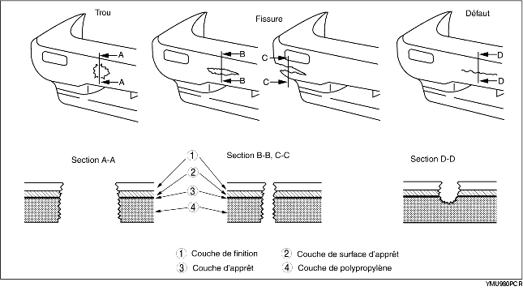
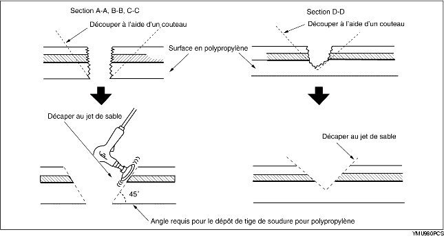
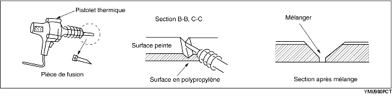
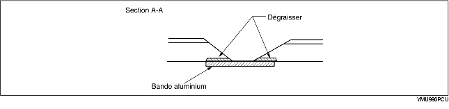
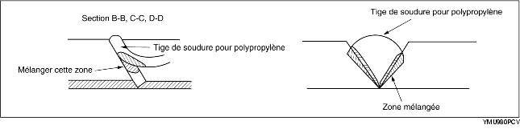
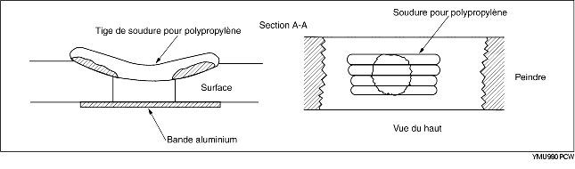
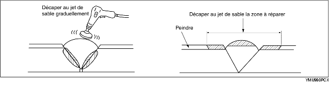
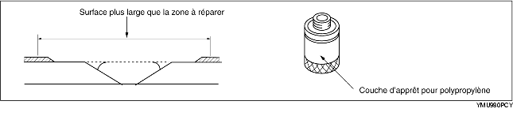
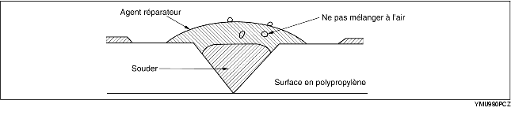
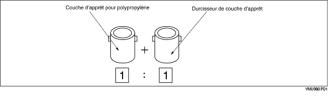

Réparation de pare-chocs en polypropylène dont l'endommagement a atteint la surface du polypropylène et est trop grave pour être réparé uniquement avec de la peinture.

1. Découper les aspérités autour de l'endommagement avec un couteau pour le rendre lisse. Poncer la zone avec une ponceuse pour faire un angle d'environ 45°.

2. Souder la zone endommagée.


3. Faire fondre la tige de soudure en polypropylène avec un pistolet thermique et la déposer sur la zone fissurée.


4. Poncer progressivement la surface du polypropylène car elle fond facilement du fait de la chaleur de l'abrasion. Poncer la zone sur laquelle l'agent de réparation doit être appliqué.

5. Appliquer uniformément une couche d'apprêt polypropylène avec une brosse sur une zone plus grande que la zone à réparer. Laisser sécher pendant 10 minutes à 20 °C {68 °F}.

6. Mélanger l'agent principal et l'agent de durcissement dans une proportion de un pour un. Appliquer l'agent de réparation mélangé sur la zone endommagée.

L'agent de réparation est un adhésif époxyde en deux parties.
Lorsque l'agent de réparation durcit, il assure une bonne finition ayant la même flexibilité que le polypropylène.
L'agent de réparation pour un pare-chocs en uréthane est également un composé adhésif en deux parties. Toutefois, il est différent de celui prévu pour un pare-chocs en polypropylène. Si le mauvais agent de réparation est utilisé, la réparation sera défectueuse.
7. Poncer la zone avec un papier de verre n° 180-240.
8. Dégraisser la surface peinte.
9. Mélanger l'apprêt et le durcisseur dans une proportion de un pour un. Appliquer l'apprêt sur la surface réparée et la surface du pare-chocs avec un pinceau ou par pulvérisation

Utiliser l'apprêt dans les 16 heures suivant son mélange.
10. Laisser la pièce sécher.
11. Ajouter le plastifiant à l'apprêt d'impression uréthane et le pulvériser sur la zone réparée.
12. Séchage par air 20 °C {68 °F} - 8 heures minimum.
Séchage accéléré 60 °C {140 °F} - 1 heure
13. Légèrement décaper l'ensemble de la surface du pare-chocs avec un papier de verre nº 400-600. Ne pas exposer la surface du polypropylène. (Ponçage humide ou à sec acceptable.)
14. Essuyer la surface complète du pare-chocs avec un agent dégraissant. Essuyer rapidement la surface avec un chiffon propre pour la dégraisser.
15. Appliquer une couche d'adaptation de la couleur de carrosserie sur le pare-chocs en polypropylène.
16. Séchage par air 20 °C {68 °F} - 8 heures minimum.
Séchage accéléré 60 °C {140 °F} - 1 heure